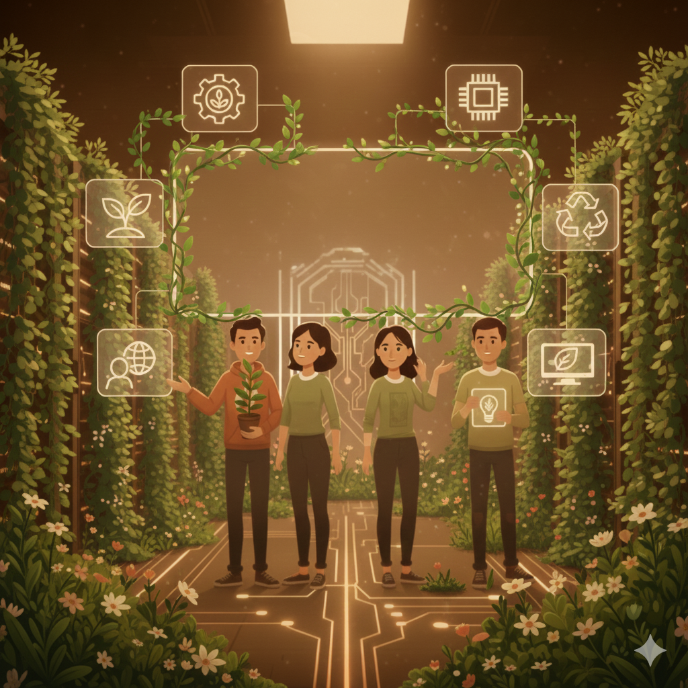

¿Qué es Second Life?
Second Life es una tienda de segunda mano que reconstruye y reutiliza equipos antiguos, promoviendo la economía verde y combatiendo la obsolescencia programada. Nuestro objetivo es reducir la contaminación global, fomentar el reciclaje de dispositivos y concienciar al público joven sobre el mundo renovable.
Definición y estrategia de la empresa
Linea de negocio
Nuestra empresa consiste en dos ígneas de negocio principales, las cuales establecen parte de las bases en la visión de desarrollo
- Compra y venta de productos de segunda mano
- Reutilización y reacondicionamiento de dispositivo
ofrecemos soluciones sostenibles mediante la reutilización, abordando necesidades como:
- Económicas: Tecnología asequible y dinero inmediato.
- Ambientales: Reducción de residuos y promoción de la economía circular.
- Sociales: Consumo responsable y creación de comunidad.
- Funcionales: Gestión adecuada de residuos y productos de calidad reacondicionados.
- Emocionales: Satisfacción personal y confianza en productos sostenibles.
- Educativas: Conocimiento sobre sostenibilidad y aprendizaje práctico.
Propuesta de valor
- Tecnología asequible y de calidad, democratizando el acceso a herramientas digitales.
- Reducción de residuos electrónicos mediante economía circular.
- Alternativas sostenibles frente a la obsolescencia programada.
- Educación ambiental y consumo responsable.
- Modelo híbrido: tienda y servicio de reacondicionamiento.
FUuncionamiento de la empresa
- Origen de equipos: Compra y venta de usuarios, donaciones de recicladoras, empresas y particulares.
- Proceso: Recolección, limpieza, prueba y reacondicionamiento de los equipos.
- Venta: Equipos y componentes tecnológicos reacondicionados, accesibles y de calidad.
- Clientes: Principalmente jóvenes con poco acceso a tecnología nueva, con opción de recogida en tienda o envío a domicilio.
Recursos productivos
- Humanos: Técnicos, vendedores y personal administrativo.
- Materiales: Herramientas y componentes reciclados o donados.
- Infraestructura: Local comercial, taller y logística.
- Tecnológicos: Software de gestión y plataformas digitales.
- Financieros: Capital inicial para operaciones y marketing.
- Colaborativos: Acuerdos con recicladoras, escuelas y empresas.
Innovación y ventajas
- Reacondicionamiento de equipos antiguos.
- Lucha contra la obsolescencia programada.
- Promoción de la economía circular.
- Reducción de residuos electrónicos.
- Modelo híbrido: tienda y servicio de reciclaje.
- Productos asequibles y de calidad.
- Educación para un consumo responsable.
- Cambio cultural sobre el valor de los dispositivos.